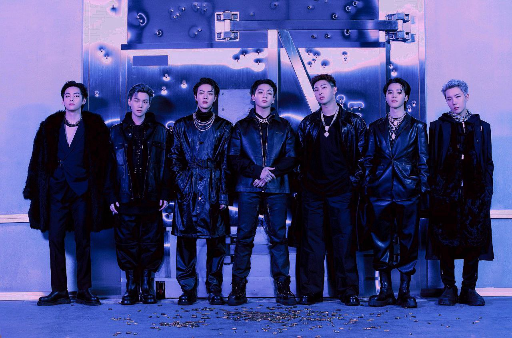
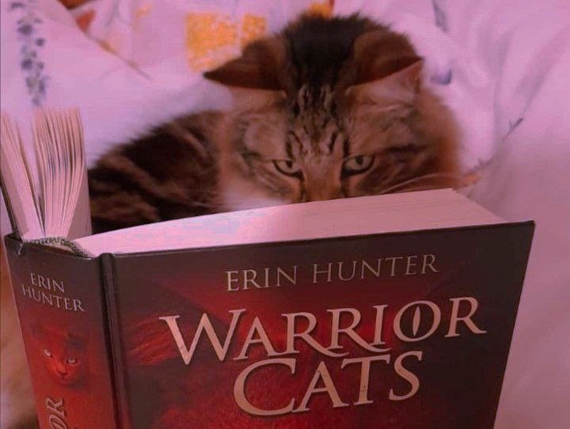

My Interests
The amount of fandoms I joined during my teenage years are too many to be listed. However, I will try to make a brief summary of the main interests I proudly embrace till this day, you might find something interesting for yourself as well.
Bangtan Sonyeodan
The absolute G.O.A.T.s of the Korean (and worldwide, who am I kidding?) Music Industry. I joined their ‘ARMY’ on 2016, when I was only 12 years old. My love for music and narrative took me through the rabbit whole of their discography. They are the only artists I also value as people, because from them I learned what I preach.

Music
As you may have noticed already, I am a bit of a music freak myself. Even though I practice interpretation and composition, admiration is really my style. Fun fact: I have more than 900 songs downloaded on my phone.
Some of my favorite songs at the moment are as follows:
- Daddy Cop - Zander Hawley
- Nuts - RM
- RSVP (Remix) - KOALA ft. Jay Park, CHIO CHICANO, BM
- Si Señor - Control Machete
- Igloo - Kiss of Life
Books
Before ‘booktok’ was born, and back when Wattpad was free and had off line unlimited access, a little me was obsessed with fantasy stories. Even if the time I have to actually sit down and read has decreased with my new adulthood, I flip a few pages anytime I have a chance. Warrior Cats is an underestimated masterpiece if you ask me...

Cooking
I will always enjoy serving some good food for my family and friends. From a cozy breakfast to an elaborate meal, everything dish always have part of my soul in it. There are not measurements or tricks whatsoever, just mixing ingredients until I heard the whisper of my ancestors saying: ‘That’s enough, cipota’.
My star dishes are listed down below:
- Mexican inspired chicken wrap
- Rabokki (Ramen and Korean rice cakes)
- Poached eggs in tomato sauce
- Orange Chicken
- Egg and avocado toast